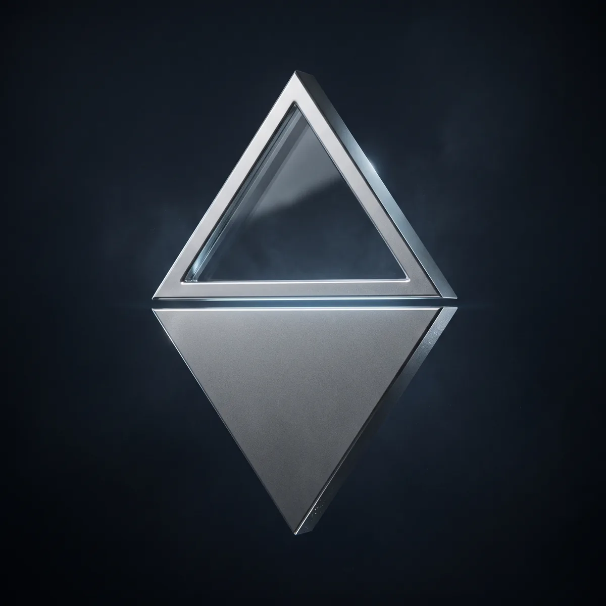
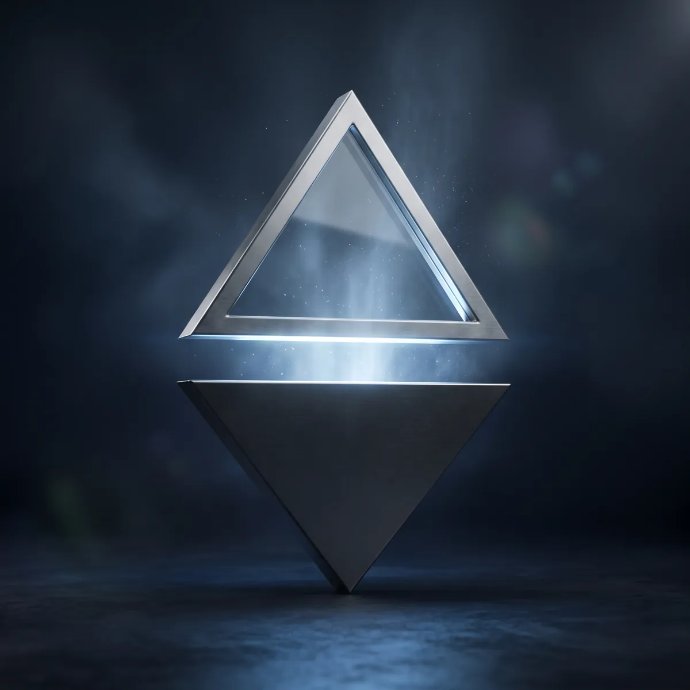

0 calls scellés en ce moment
- Callers
- 0
- Calls scellés
- 0
- Arbitre
- Le contrat
- Données
- Lues sur la blockchain, testnet
La crypto d'abord
Le résultat d'un call crypto se vérifie sur des prix publics : scellé avant le marché, ouvert à l'échéance, vérifiable par tous.
Calls à la une
Scellés, numérotés, impossibles à cacher. Le sujet est public, le pronostic reste secret jusqu'à l'ouverture.
Pronostics ouverts
Une réponse par wallet, scellée et chiffrée jusqu'à l'échéance. Aucun TARI demandé.
Le classement
Classé sur les résultats, jamais sur les ventes. Un call caché compte perdu.
Ce qui vient de s'ouvrir
Chaque résultat est publié par le contrat à l'échéance, avec la preuve.
Votre ligue, vos règles.
Créez un tableau de pronostics pour vos amis ou votre communauté. Vous posez les questions, la blockchain tient le score.
- ScelléLe call est enregistré chiffré avant le marché, sous un numéro.
- LivréSeul l'acheteur peut le lire. S'il est faux, le contrat le juge.
- OuvertÀ l'échéance, il devient public. Le classement se recalcule.
Ce qu'on vous montre.
Ce qui s'est passé.
Sur Telegram ou X, un caller garde ses gains en capture d'écran et supprime le reste. Ici, chaque call est enregistré au moment où il est scellé. Un call qu'on n'ouvre pas compte comme perdu, et ses acheteurs sont remboursés.
Trois moments.
Aucun arbitre.

Scellé.
Le caller enregistre son call avant que le marché bouge. Personne ne peut le lire, et lui ne peut plus le changer.
Livré.
L'acheteur reçoit le call chiffré pour lui seul. S'il ne correspond pas à ce qui a été scellé, le contrat le constate et rembourse.

Ouvert.
À l'échéance, le call devient public. N'importe qui peut vérifier le résultat et recalculer le classement.
Un résultat,
une preuve.
Quand un call s'ouvre, Signal Desk génère sa carte : ce qui a été scellé, quand, et ce qui s'est passé. Le lien renvoie à la transaction sur la blockchain, que n'importe qui peut vérifier.
Ne nous croyez pas.
Vérifiez.
Chaque call scellé et ouvert est public sur Ootle. Le script les lit directement, sans passer par nos serveurs.
Les prix de marché viennent de sources publiques et archivées, les mêmes pour tout le monde.
Le script refait le classement. Si votre résultat diffère du nôtre, c'est que nous avons tort, et vous pouvez le prouver.
$ npx signal-desk-verify --window 30dDisponible avec la publication du contrat sur le mainnet.Nouveau sur Ootle ?
Les pronostics sont gratuits. Pour acheter un call, il faut des TARI, la monnaie d'Ootle. Compte environ une journée la première fois.
Passage XTM → TARI : ouvert sur le testnet, sur le mainnet dès le lancement d'Ootle.
Minez-les avec Tari Universe, l'application officielle de Tari, ou achetez-les sur une plateforme d'échange.
Télécharger Tari UniverseLe pont officiel de Tari détruit vos XTM et vous crédite autant de TARI sur Ootle : 1 XTM donne 1 TARI. Rien ne passe par Signal Desk.
Comment Tari le décritInstallez Sapient, l'extension wallet d'Ootle, puis achetez un call ou scellez un pronostic.
Le détail, étape par étape
- Installez Tari Universe et créez votre wallet. Notez la phrase de récupération sur papier, jamais en ligne.
- Obtenez des XTM : en minant avec Tari Universe, ou en les achetant sur une plateforme d'échange puis en les retirant vers ce wallet.
- Installez l'extension Sapient et créez un compte Ootle.
- Convertissez vos XTM en TARI vers ce compte Ootle avec l'outil officiel de Tari. Sur le testnet, le crédit arrive en une heure environ.
- Revenez ici et connectez Sapient : votre solde de TARI s'affiche dans le volet wallet.
Signal Desk ne vous demandera jamais votre phrase de récupération, et aucun pont n'est intégré au site : n'utilisez que les outils officiels de Tari.
Questions
fréquentes.
C'est quoi un desk ?
C'est votre boutique de calls sur la blockchain. Il garde vos calls scellés, les vend en TARI et prouve votre historique. Il porte aussi votre nom, votre bio et votre photo, lisibles depuis n'importe quel appareil. Il se crée en une signature, depuis votre profil.
Comment publier un call ?
Ouvrez Mon compte, remplissez le call (paire, direction, entrée, objectif, stop) et scellez-le, avec un prix si vous voulez le vendre. Personne ne peut le lire avant l'échéance, et vous ne pouvez plus le modifier.
Qui ouvre les calls à l'échéance ?
Pas besoin du caller. Chaque call est verrouillé dans le temps : il se déverrouille tout seul après sa clôture et il est ouvert automatiquement sur la blockchain. Son résultat est ensuite recalculé sur les prix publics.
Comment marchent les ligues ?
Une ligue regroupe des questions : oui ou non, nombre, choix multiple. Chacun y scelle sa réponse gratuitement. Personne ne la voit avant la clôture, puis toutes s'ouvrent ensemble.
Est-ce un conseil financier ?
Non. Signal Desk prouve ce qu'un caller a annoncé et quand. Il ne dit pas si son prochain call sera bon, et rien sur le site n'est une recommandation d'investir.
Que se passe-t-il si un caller n'ouvre pas son call ?
Le call compte comme perdu dans son classement, et chaque acheteur est remboursé automatiquement par le contrat. Il n'y a rien à réclamer.
Faut-il créer un compte ?
Non. Un wallet Ootle suffit. Aucun email, aucun mot de passe, aucune donnée personnelle.
Un caller peut-il tricher ?
Il ne peut ni modifier un call scellé, ni le cacher, ni gonfler son classement en achetant ses propres calls : seuls les résultats comptent. Ouvrir plusieurs comptes ne sert à rien non plus, car l'ancienneté de chaque historique est affichée.
Comment être prévenu d'un nouveau call ?
Suivez un caller : le bot Signal Desk publie chaque call scellé et chaque ouverture sur Bluesky. Telegram arrivera ensuite.
Les pronostics sont-ils vraiment gratuits ?
Oui. Ils sont scellés comme un vrai call, sans rien payer. Seul l'achat d'un call se paie, en TARI.